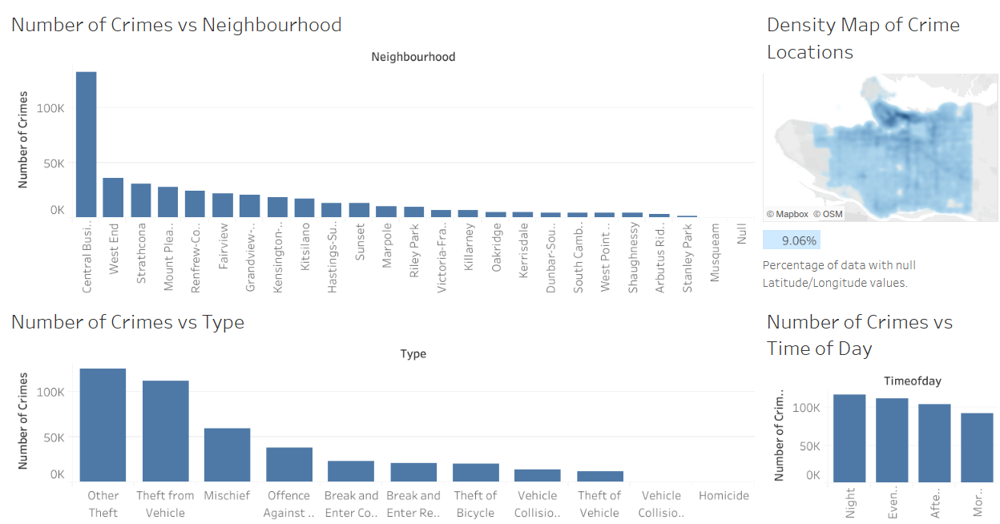
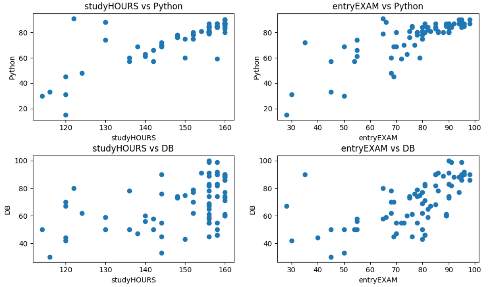
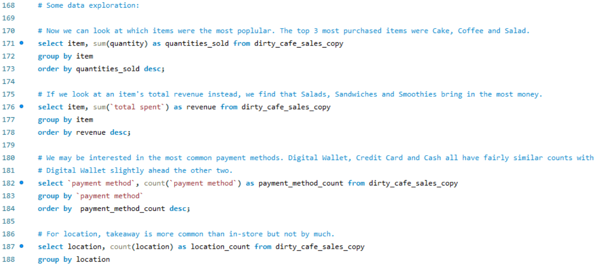

Using 425 618 data points from the Vancouver Police Department, I analyzed which neighbourhoods of Vancouver
have the smallest number of crimes commited. I created a dashboard with Tableau for visualizing the results with many options for filtering. I also plotted the number of crimes vs type of crime, time of day, month and year.
And I used Python to combine data for different years and transform variables. The code I wrote can be found here.

I cleaned a synthetic data set with information on 77 students and their test scores. I standardized categorical data, dropped useless columns and looked for duplicates. Then I analyzed which features are related to a student's test performance using correlations, category means, linear regression models and F-tests.

I cleaned a synthetic data set with 10 000 cafe orders using SQL. I standardized missing values for categorical/date columns, and I used information from other columns to correct missing values where possible. And then I did some exploratory analysis to see which items are sold the most / bring the most revenue among other things.